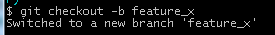
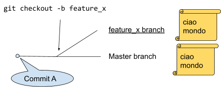
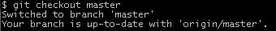
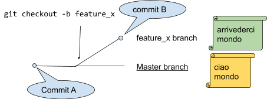
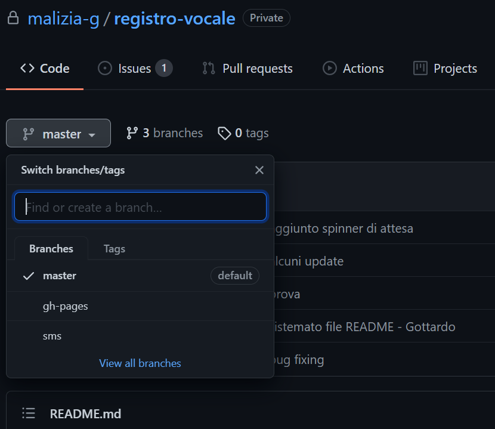

Branching
I branch ('ramificazioni') sono utilizzati per sviluppare isolate l'una dall'altra. Il branch master è quello di default quando crei un repository. Puoi usare altri branch per lo sviluppo ed infine incorporarli ('merge') nel master branch una volta completati.

Esercizio sui branch
Parte 0
- Crea una nuova cartella, al suo interno crea un file di testo
- Inizializza git su quella cartella
- Aggiungi un repository remoto
- Scrivi “Ciao Mondo” sul file di testo
- Committa il file con commento “commit A”
Parte 1
- crea un nuovo branch (per il file di testo) chiamato "feature_x".
git checkout -b feature_x -> 
In questo modo hai creato un nuovo branch e sei passato a quel branch

- Modifica il file scrivendo “Arrivederci Mondo” e fai un commit “commit B”
- ritorna di nuovo su master
git checkout master -> 

e cancella il branch creato in precedenza
git branch -d feature_x

Parte 2
crea due nuovi branch chiamati "new_branch_pippo" e "new_branch_topolino".
Prova a passare da un branch all’altro con il comando checkout
il branch non sarà disponibile su git hub fino a quando non verrà inviato al repository remoto
Parte 3 - Manda i due branch su git hub
- Prima di tutto spostati sul branch che vuoi aggiungere a git hub (comando checkout)
- Invia su git hub con git push origin <nome_del_tuo:branch>
- Es: git push origin new_branch_pippo
- Verifica su git hub che i branch siano presenti ...
Rispondi alle seguenti domande
- Per quale motivo vengono realizzati i branch?
- Che differenza c’è tra i seguenti comandi
- git branch
- git checkout
- git checkout -b
- Quando effettui modifiche su due diversi branch in locale, puoi decidere di aggiornare uno solo di questi branch su github? Come?
# | Stato | Risposta |
1 | Non iniziato |
|
2 | Non iniziato |
|
3 | Non iniziato |
|
Works Cited
"Git - La Guida Tascabile." Git - La Guida Tascabile - Niente Di Complicato! Web. 01 Dec. 2016.